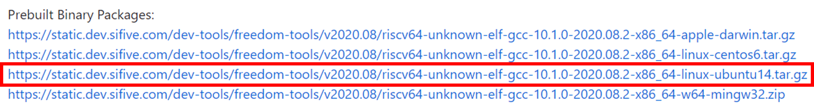
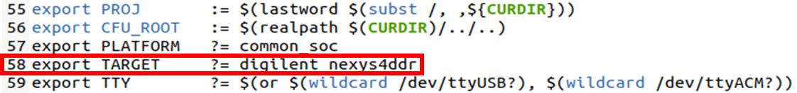
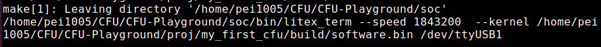
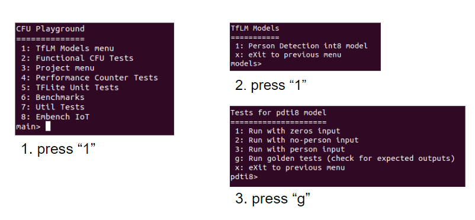
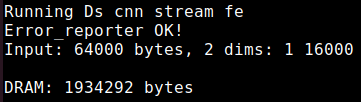

Lab1: CFU-Playground Environment Setup & Porting KWS model#
Goals of this lab#
CFU-Playground Environment Setup -20%#
Setup Guide#
1. Prepare a supperted board (We use Nexys A7-100T)#
2. Clone the CFU-Playground Repository from the github#
$ git clone https://github.com/google/CFU-Playground.git
3. Run the setup script#
$ cd CFU-Playground
$ ./scripts/setup
4. Install Toolchain (Option 4d: Install/Use Vivado)#
Hint
Note that the software can take up to 8 hours to download, so plan to do that ahead of time.
5. Install RISC-V toolchain (Download linux-ubuntu)#
Download the August 2020 toolchain from freedom-tools and unpack the binaries to your home directory:
$ tar xvfz ~/Downloads/riscv64-unknown-elf-gcc-10.1.0-2020.08.2-x86_64-linux-ubuntu14.tar.gz
Add the toolchain to your PATH in your .bashrc script:
export PATH=$PATH:$HOME/riscv64-unknown-elf-gcc-10.1.0-2020.08.2-x86_64-linux-ubuntu14/bin
6. Test Run#
Change the target board
Modify proj/proj.mk
export TARGET ?= digilent_nexys4ddr
Make Your Project
$ cp -r proj/proj_template_v proj/my_first_cfu $ cd proj/my_first_cfu``
Test run
Connect FPGA board to computer
Builds and programs gateware
$ make prog USE_VIVADO=1 TTY=/dev/ttyUSB0
Builds and loads C program (BUILD_JOBS=How many cores does your computer have)
$ make load BUILD_JOBS=4 TTY=/dev/ttyUSB1
press the “CPU_RESET” button on the board 


Porting KWS model -60%#
See the architecture of the keyword spotting (KWS) model#
Porting audio operators#
CFU-Playground doesn’t have following two audio operators, so we should porting them first:
Audio spectrogram
Mfcc
1. Download the patch file#
2. Put the patch file in CFU-Playground#
$ cd CFU-Playground
$ patch -p1 -i kws_tflm_audio_op.patch
3. Modify proj/proj.mk#
mkdir -p $(BUILD_DIR)/src/third_party/fft2d
$(COPY) $(TFLM_TP_DIR)/fft2d/fft.h $(BUILD_DIR)/src/third_party/fft2d
$(COPY) $(TFLM_TP_DIR)/fft2d/fft2d.h $(BUILD_DIR)/src/third_party/fft2d
$(COPY) $(TFLM_TP_DIR)/fft2d/fft4g.c $(BUILD_DIR)/src/third_party/fft2d

Porting the model#
1. Create a folder for KWS model#
$ cd CFU-Playground/common/src/models/
$ mkdir ds_cnn_stream_fe
$ cd ds_cnn_stream_fe
2. Download the tflite file and input files#
Download ds_cnn_stream_fe.tflite
Put ds_cnn_stream_fe.tflite in CFU-Playground/common/src/models/ds_cnn_stream_fe/
Unzip label.zip in CFU-Playground/common/src/models/
3. Create files to run inference on the model#
How to run inference using TensorFlow Lite for Microcontrollers
CFU-Playground/common/src/models/ds_cnn_stream_fe/ds_cnn.h#
#ifndef _DS_CNN_STREAM_FE_H
#define _DS_CNN_STREAM_FE_H
#ifdef __cplusplus
extern "C" {
#endif
// For integration into menu system
void ds_cnn_stream_fe_menu();
#ifdef __cplusplus
}
#endif
#endif // _DS_CNN_STREAM_FE_H
CFU-Playground/common/src/models/ds_cnn_stream_fe/ds_cnn.cc#
Design the following codes to run inference on the model. You need to
use files in models/label/ as your inputs which have already include
in the following codes. Then print all 12 output scores.
Hint
You can refer to the codes of other models in common/src/models/ and use the functions in common/src/tflite.cc
Warning
Output scores should stored as uint32_t because we can’t print floats.
#include "models/ds_cnn_stream_fe/ds_cnn.h"
#include <stdio.h>
#include "menu.h"
#include "models/ds_cnn_stream_fe/ds_cnn_stream_fe.h"
#include "tflite.h"
#include "models/label/label0_board.h"
#include "models/label/label1_board.h"
#include "models/label/label6_board.h"
#include "models/label/label8_board.h"
#include "models/label/label11_board.h"
// Initialize everything once
// deallocate tensors when done
static void ds_cnn_stream_fe_init(void) {
tflite_load_model(ds_cnn_stream_fe, ds_cnn_stream_fe_len);
}
// Implement your design here
static struct Menu MENU = {
"Tests for ds_cnn_stream_fe",
"ds_cnn_stream_fe",
{
MENU_END,
},
};
// For integration into menu system
void ds_cnn_stream_fe_menu() {
ds_cnn_stream_fe_init();
menu_run(&MENU);
}
4. Modify files#
Add codes below:
CFU-Playground/common/src/models/model.c#
#include "models/ds_cnn_stream_fe/ds_cnn.h"
#if defined(INCLUDE_MODEL_DS_CNN_STREAM_FE)
MENU_ITEM(AUTO_INC_CHAR, "Ds cnn stream fe", ds_cnn_stream_fe_menu),
#endif
CFU-Playground/common/src/tflite.cc#
Set the kTensorArenaSize. You should set the “size” below.
#ifdef INCLUDE_MODEL_DS_CNN_STREAM_FE
3000 * 1024,
#endif
Hint
The size of kTensorArenaSize will depend on the model you’re using, and may need to be determined by experimentation. You should try again and again to get minist value.
CFU-Playground/proj/my_first_cfu/Makefile#
DEFINES += INCLUDE_MODEL_DS_CNN_STREAM_FE
#DEFINES += INCLUDE_MODEL_PDTI8
5. Run the project#
$ cd CFU-Playground/proj/my_first_cfu
$ make prog USEVIVADO=1 TTY=/dev/ttyUSB0
$ make load BUILD_JOBS=4 TTY=/dev/ttyUSB1
Hint
It’s successful to load a model that you get the following output. Then you could get 20% points.
Press a number to run a test.

Hint
If you get all of the following output scores correct, you could get all the points of this part which means 60% points.

Measuring how much MAC and DRAM space of KWS model use. -20%#
Measuring the DRAM space required for a model. -5%#
1. Modify CFU-Playground/common/src/tflite.cc#
Add codes below:
printf("DRAM: %d bytes\n", interpreter->arena_used_bytes());

2. Run the project#
We got KWS model used 1934292 bytes of the memory space.
Measuring the cycles of multiply-and-accumulate(MAC) operation required for a model. -15%#
We can use the functions in CFU-Playground/common/src/perf.h to
count the cycles of MAC operations.
1. Create files in CFU-Playground/common/src/models to record cycles.#
my_cycles.cc#
long long unsigned my_cycles = 0;
long long unsigned get_my_cycles(){
return my_cycles;
}
void reset_my_cycles(){
my_cycles = 0;
}
my_cycles.h#
long long unsigned get_my_cycles();
void reset_my_cycles();
2. Inside your project folder run the following:#
$ mkdir -p src/tensorflow/lite/kernels/internal/reference/integer_ops/
$ cp \
../../third_party/tflite-micro/tensorflow/lite/kernels/internal/reference/conv.h \
src/tensorflow/lite/kernels/internal/reference/conv.h
This will create a copy of the convolution source code in your project directory. At build time your copy of the source code will replace the regular implementation.
3. Modify conv.h#
Open the newly created copy at
proj/my_first_cfu/src/tensorflow/lite/kernels/ internal/reference/conv.h.
Locate the innermost loop of the first function, it should look
something like this:
for (int in_channel = 0; in_channel < filter_input_depth; ++in_channel) {
float input_value = input_data[Offset(
input_shape, batch, in_y, in_x, in_channel + group * filter_input_depth)];
float filter_value = filter_data[Offset(
filter_shape, out_channel, filter_y, filter_x, in_channel)];
total += (input_value * filter_value);
}
Add #include "perf.h" , #include "models/my_cycles.h" and
extern long long unsigned my_cycles; at the top of the file and then
surround the inner loop with perf functions to count how many cycles
this inner loop takes.
#include "perf.h"
#include "models/my_cycles.h"
extern long long unsigned my_cycles;
/* ... */
unsigned my_start = perf_get_mcycle();
for (int in_channel = 0; in_channel < filter_input_depth; ++in_channel) {
float input_value = input_data[Offset(
input_shape, batch, in_y, in_x, in_channel + group * filter_input_depth)];
float filter_value = filter_data[Offset(
filter_shape, out_channel, filter_y, filter_x, in_channel)];
total += (input_value * filter_value);
}
unsigned my_finish = perf_get_mcycle();
my_cycles += (my_finish - my_start);
4. Modify CFU-Playground/common/src/models/ds_cnn_stream_fe/ds_cnn.cc .#
Add #include "models/my_cycles.h" at the top of the file. Use the
functions in models/my_cycles.h to print the total cycles of MAC
operations.
#include "models/ds_cnn_stream_fe/ds_cnn.h"
#include <stdio.h>
#include "menu.h"
#include "models/ds_cnn_stream_fe/ds_cnn_stream_fe.h"
#include "tflite.h"
#include "models/label/label0_board.h"
#include "models/label/label1_board.h"
#include "models/label/label6_board.h"
#include "models/label/label8_board.h"
#include "models/label/label11_board.h"
#include "models/my_cycles.h"
// Initialize everything once
// deallocate tensors when done
static void ds_cnn_stream_fe_init(void) {
tflite_load_model(ds_cnn_stream_fe, ds_cnn_stream_fe_len);
}
// Implement your design here
static struct Menu MENU = {
"Tests for ds_cnn_stream_fe",
"ds_cnn_stream_fe",
{
MENU_END,
},
};
// For integration into menu system
void ds_cnn_stream_fe_menu() {
ds_cnn_stream_fe_init();
menu_run(&MENU);
}
5. Run the project#
You must make clean first. To enable performance counters you should use the command below.
$ make clean
$ make prog EXTRA_LITEX_ARGS="--cpu-variant=perf+cfu"
$ make load